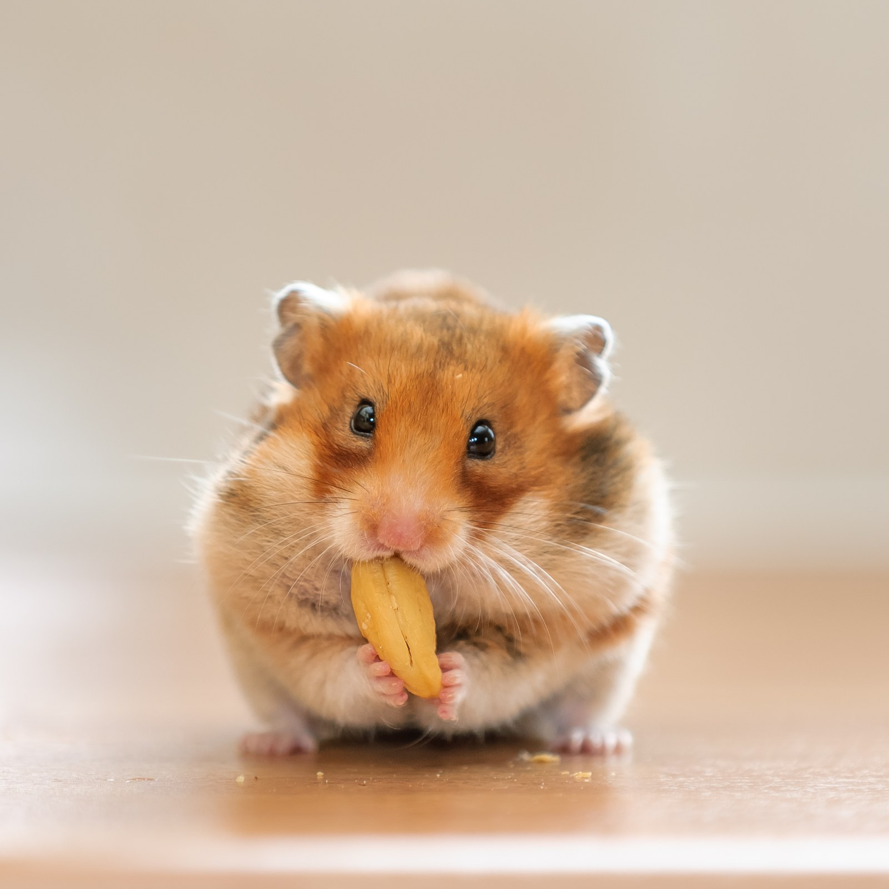
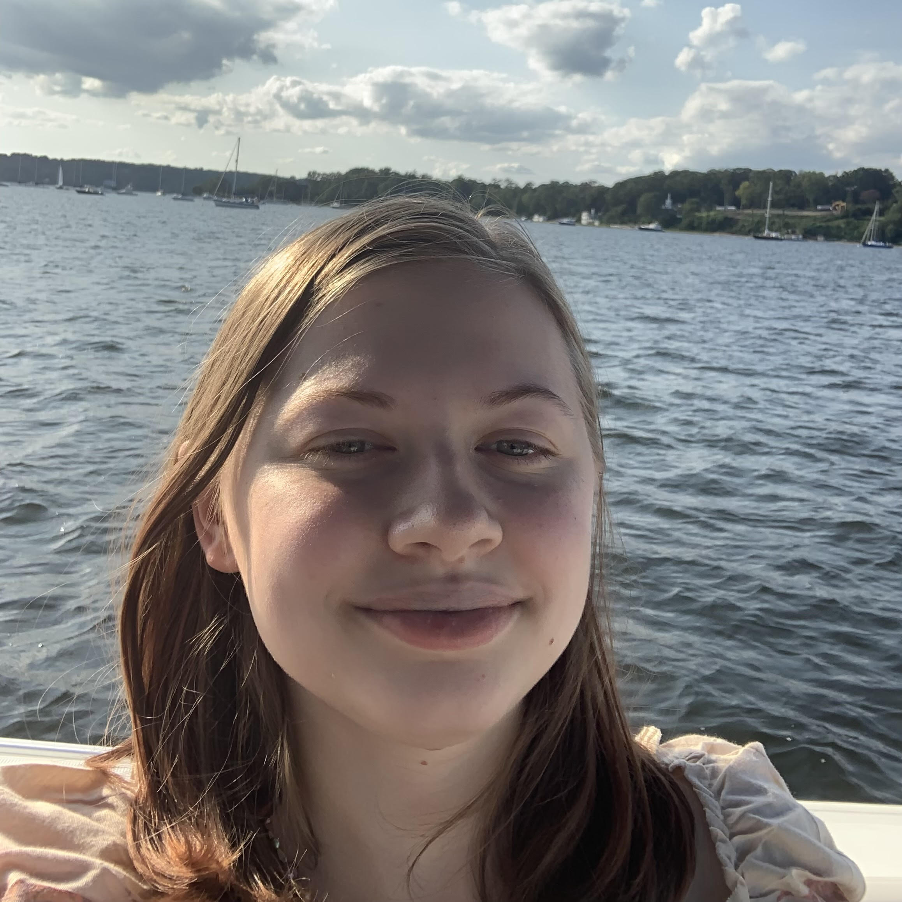
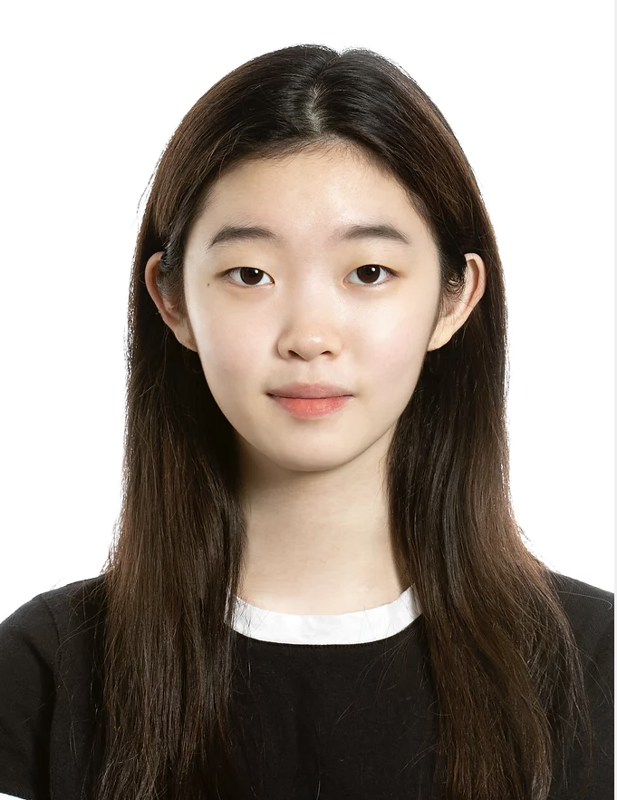

Principal Investigator
- Hwan Kim Ph.D.
- I came from S. Korea in 2002 (missed World Cup 2002!!) and am a microbiologist by training at the University of Chicago and Howard T. Ricketts Laboratory (many thanks to Dr. Schneewind and Dr. Missiakas). I have studied various aspects of microbial pathogenesis, immune evasion mechanisms, host immunity, and host-pathogen-vector interactions in Chicago and now in Long Island. I hope that our research provides insights into the development of vaccines and therapeutics for microbial pathogens of public health importance. When I am not thinking about science, I enjoy eating delicious food my spouse made, reading fiction books, playing video games with our children, and cleaning the laboratory and house.
Senior Research Scientist

- Ilia Rochlin Ph.D., Center for Infectious Diseases
- I was trained as an entomologist and epidemiologist at Cornell University and Touro College, respectively. I have worked at various capacities as a bacteriologist through laboratory director for state and local public health agencies investigating mosquito and tick-borne diseases within the eco-epidemiological framework as a complex system of interacting environmental, social, and biological factors. My work has encompassed a broad range of subjects from molecular biology and virology to entomology, ecology, and sociology. The common denominator among these diverse interests is the focus on public health driven by a quantitative approach and statistical modeling. My professional interests overlap with my long standing fascination with "old fashioned" natural history and pursuits in macrophotography.
- E-mail: ilia.rochlin at stonybrook.edu
Senior Research Technicians

- JoAnn Mugavero B.S.
- I graduated from Stony Brook back in 1980 and immediately began working on Foot and Mouth Disease Virus at Plum Island, then at Brookhaven National Laboratory on DNA damage and repair. From there I spent 29 years at Stony Brook working on poliovirus and Dengue virus and currently I am in Hwan's lab where I intend to stay until I retire. I have always enjoyed swimming, fishing, camping, boating, hiking and especially bird watching. For over 20 years I had a permanent campsite in Greenport where I would stay on weekends and vacations where I enjoyed all of these outdoor activities. Growing up I spent weekends in Vermont at my Aunt and Uncle's ski lodge where I enjoyed countless hours of skiing. When I relax indoors I enjoy cooking and reading, especially historical fiction. I also love opera and enjoy going to Broadway shows. For the time being though I am enjoying learning new things in the lab and spending time with my family is my number one pleasure.
- E-mail: joann.mugavero at stonybrook.edu
- Wan-Yi Yen B.S., Laboratory of Comparative Medicine
- I am from Taiwan. I got my B.E. in Biomedical Engineering at Stony Brook University. Then, I went to the City College of New York for my M.S. also in Biomedical Engineering. After graduation, I worked in the stem cell facility at Stony Brook University for three years, focusing on microscopy and imaging analysis. Currently, I am a technician in the Laboratory of Comparative Medicine. My studies are related to SARS-CoV-2 and R. amblyommatis. I like baking, cooking, planting and traveling.
- E-mail: wan-yi.yen at stonybrook.edu
Graduate Students
- Luke Helminiak, B.S., Molecular Genetics and Microbiology
- I received my B.S. in Molecular Biology and Biochemistry from the University of Wisconsin Eau Claire. I then went and worked at the Next Generation Sequencing Laboratory at the Mayo Clinic in Rochester MN. For my dissertation, I study
Rickettsia pathogenesis with a focus on hemolysin secretion and function. Following my graduation, I aim to work on infectious disease diagnostics and have the opportunity to have a direct role in helping patients. Thus, my goal is to work as a Laboratory Director in a clinical microbiology laboratory. I have a love of sports, and enjoy running, basketball, snowboarding, and archery. During my down time, I love listening to music and watching movies.
- E-mail: luke.helminiak at stonybrook.edu

- Smruti Mishra, M.S., Molecular Genetics and Microbiology
- I am from Bhubaneshwar, India. I did my bachelor’s in Dental Surgery from Pravara Institute of Medical Sciences, India and my MS in Molecular Biosciences from Albany College of Pharmacy and Health Sciences. While at ACPHS I worked in Dr. Meenakshi Malik’s lab using an in vitro bioreactor infection model to study the evolution of daptomycin resistance in methicillin-resistant Staphylococcus aureus. For my PhD thesis I am working on understanding the contribution of polysaccharide synthesis operon on tick-borne rickettsiosis as well as its role in shaping host immunity. My research interests lie in the field of bacterial pathogenesis and infectious diseases, specifically in understanding the host-pathogen interactions and molecular mechanisms involved in the same. In my free time I love travelling and exploring new places with my husband and learning to cook new Indian dishes. I enjoy watching movies and dancing as well.
- E-mail: smruti.mishra at stonybrook.edu
Undergraduate Students
- Linda Chen
- I am a current 4th year undergraduate student at Stony Brook University, receiving my bachelor’s degree in Biology. I was born in Manhattan, but my childhood did not remain in the city for the entirety. I have been raised in China, Maryland, and Queens before residing in Manhattan for a couple of years. My current research interests in this laboratory revolve around actin-based motility in Rickettsia amblyomattis and the diagnosis of Lyme disease through the release of outer membrane vesicles (OMVs). My future goals involve aiming for a MD/PhD, combining the knowledge of medicine and infectious diseases to further the advancement of treatments and diagnosis of pathogenic microorganisms within humans. In my free time, I like to play video games, read fantasy novels and comics, and wasting more time than expected on Tiktok.
- E-mail: linda.chen.3 at stonybrook.edu
- Dennis Chu
- I am currently a sophomore at Stony Brook University studying Biochemistry. I hope to apply to medical school in the future and pursue a medical degree. Currently, I am working on building an in vitro tick feeding system within the lab in order to establish an easier and more efficient way to reproduce tick transmission cycles. Outside of school, I enjoy playing volleyball and travelling.
- E-mail: dennis.chu at stonybrook.edu
- Jonni Nazarian
- I am a 4th-year undergraduate student here at Stony Brook University, receiving my bachelor's degree in Health Science. After I graduate, I plan on getting my MPH and would like to work in public health/community education. My current research interests in the lab involve working with rickettsial antigens and cloning, as well as phospholipase function during infection. Outside of school, I spend my time playing music, watching movies and reading.
- E-mail: jonni.nazarian at stonybrook.edu

- Theresa Rohan
- I am currently a third year student at Stony Brook University pursuing a Biology B.S. degree. After graduation, I hope to continue working in a microbiology lab and possibly pursue a PhD. My research is concerned with the pathogenesis of
Rickettsia amblyommatis. In my free time, I enjoy walking the beach, watching baseball, drinking tea, and painting with watercolors and acrylics.
- E-mail: theresa.rohan at stonybrook.edu
High school student

- Michelle Bok, Seoul International School
- Michelle, a current junior at Seoul International School of South Korea, has held a long-standing passion for microbiology and microbial endocrinology. In 2021, she conducted independent research on the effect of extreme epinephrine release on the antimicrobial properties of the gut microbiome such as L. plantarum and E. hallii. Her long term goals are to break the paradigm that STEM is a field guarded by the elites and academia and instead that it trickles into the most mundane aspects of life, thus causing her to create the Global STEM Youth Journal — a student network consisting of members from 15 different nations, and one of her serious hobbies includes fencing. In this lab, she envisions exploring the correlation between different surface proteins of Rickettsia rickettsii that affect its virulence and different canine hosts as amplifying reservoirs for the bacteria as a remote intern.
- E-mail: michelleleebok23 at gmail.com
Alumni
Undergraduate student
- Lydia Sprague, Department of Biomedical Engineering, Stony Brook University
High school student
- Kayla Stern, John F. Kennedy High School